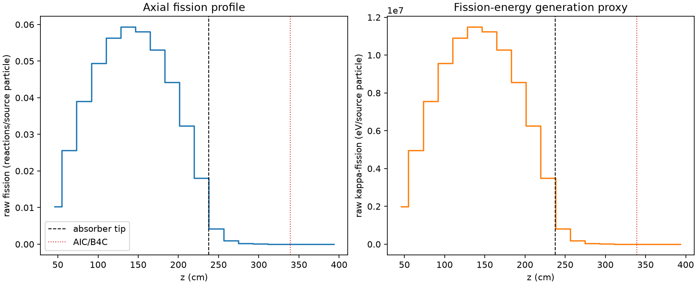
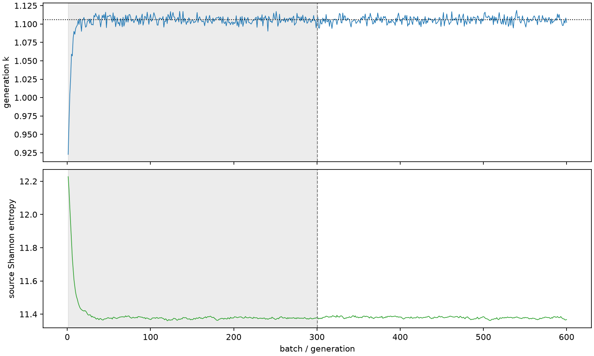

| field | value |
|---|---|
| experiment | V2-STAGE_256_OGRENCI_02-0001 |
| k | 1.1056494483142063 |
| MC standard error | 0.0001779865905337277 |
| seconds | 958.7342739849992 |
| acceptance | not_assessed |
| convergence | review_required |
Completed is output integrity only; physical and statistical review required. Zero tallies do not prove zero production or zero uncertainty.
| diagnostic | value |
|---|---|
| geometric fuel voxels | 5280 |
| zero fission tally voxels | 460 |
| low signal fuel voxels | 1415 |
| low signal fission share | 8.446011594610545e-05 |
| low signal kappa share | 8.449999211375613e-05 |
| important fission share | 0.9501363240541191 |
| previous filter included | 3865 |
| duration estimate s | 1562.5173488400023 |
| actual minus estimate s | -603.7830748550032 |
| fission relative MC error | statistics |
|---|---|
| all_geometric_fuel | {"voxels": 5280, "positive_mean_voxels": 4820, "zero_mean_voxels": 460, "undefined_relative_error_voxels": 460, "median": 0.011433931642527088, "p95": 0.9291949833230816, "maximum": 1.0000000000000002} |
| low_signal | {"voxels": 1415, "positive_mean_voxels": 955, "zero_mean_voxels": 460, "undefined_relative_error_voxels": 460, "median": 0.5499344511837825, "p95": 1.0, "maximum": 1.0000000000000002} |
| important_95pct | {"voxels": 2539, "positive_mean_voxels": 2539, "zero_mean_voxels": 0, "undefined_relative_error_voxels": 0, "median": 0.007519182488812827, "p95": 0.011523352577727382, "maximum": 0.013412638149496793} |
| outside_previous_filter | {"voxels": 1415, "positive_mean_voxels": 955, "zero_mean_voxels": 460, "undefined_relative_error_voxels": 460, "median": 0.5499344511837825, "p95": 1.0, "maximum": 1.0000000000000002} |
| kappa_fission relative MC error | statistics |
|---|---|
| all_geometric_fuel | {"voxels": 5280, "positive_mean_voxels": 4820, "zero_mean_voxels": 460, "undefined_relative_error_voxels": 460, "median": 0.011421015459732852, "p95": 0.9287348641234512, "maximum": 1.0000000000000002} |
| low_signal | {"voxels": 1415, "positive_mean_voxels": 955, "zero_mean_voxels": 460, "undefined_relative_error_voxels": 460, "median": 0.5486247112581815, "p95": 1.0, "maximum": 1.0000000000000002} |
| important_95pct | {"voxels": 2539, "positive_mean_voxels": 2539, "zero_mean_voxels": 0, "undefined_relative_error_voxels": 0, "median": 0.007510122751416776, "p95": 0.011509462037689098, "maximum": 0.013396306720910548} |
| outside_previous_filter | {"voxels": 1415, "positive_mean_voxels": 955, "zero_mean_voxels": 460, "undefined_relative_error_voxels": 460, "median": 0.5486247112581815, "p95": 1.0, "maximum": 1.0000000000000002} |
| axial bin | fission share | kappa-fission share |
|---|---|---|
| 1 | 0.02284158517779347 | 0.022842623038546266 |
| 2 | 0.05679183425338144 | 0.0567914997669247 |
| 3 | 0.0865091064324475 | 0.08650868856634845 |
| 4 | 0.10959052163333201 | 0.1095898056229875 |
| 5 | 0.12480900711214038 | 0.12480816331703498 |
| 6 | 0.13146132053364473 | 0.13146044562868248 |
| 7 | 0.12863752768605793 | 0.12863669623366683 |
| 8 | 0.11768469961510997 | 0.11768376388814276 |
| 9 | 0.0978907368001105 | 0.09789039524954393 |
| 10 | 0.07162525386006885 | 0.07162509145912573 |
| 11 | 0.04000484771199381 | 0.04000500346157087 |
| 12 | 0.009284695124200649 | 0.00928781592232187 |
| 13 | 0.002173293995213614 | 0.0021741241357462683 |
| 14 | 0.0005300112351814938 | 0.0005302428147995027 |
| 15 | 0.0001271300143471361 | 0.00012719237411286076 |
| 16 | 3.0394887225135127e-05 | 3.0409697026284333e-05 |
| 17 | 6.68581847770577e-06 | 6.690183781273775e-06 |
| 18 | 1.0747377236248628e-06 | 1.0753054922384797e-06 |
| 19 | 1.5179796409682687e-07 | 1.5174109334483416e-07 |
| 20 | 1.2157358587798737e-07 | 1.2159305176233984e-07 |
Histories include the inactive-to-active transition at batch 300. kappa-fission approximates fission energy production, not total heat deposition.

